Capturas en modo iPhone (390 x 844), con el día simulado de HOY y el viaje de pruebas de Roma (17 al 20 de octubre de 2026), en desarrollo. Hechas con lo que ya existe (window.__rutaPrueba, __horaFalsa, __momentos, __pruebaDelPase…); no se ha cambiado nada de la app. 25 con captura · 2 sin captura.
Resumen de sonidos: la app solo hace sonar los momentos de logros (src/lib/sonidos.ts, lo de Eric en data/sonidos/estudio.json), la campanita aviso cuando llega un aviso nuevo a la campana (una vez cada cierto tiempo) y el toque de [Visto]. Los avisos y hojas de HOY, el pase y RESERVAS no suenan.
Cuándo sale: A las 12:00 del día de prueba, si la persona no tiene pase, tiene la prueba sin gastar y no ha usado HOY por la mañana. La pregunta es «¿Usas hoy tu día de prueba o lo guardas para mañana?».
Cuántas veces: Una vez por día de prueba (el servidor decide; la prueba es una por cuenta, para siempre).
Si suena: No suena. (En HOY, el pase y RESERVAS la app no llama a ningún sonido: `sonar()` solo se pide en los momentos de logros, en la campana de avisos y en el [Visto].)
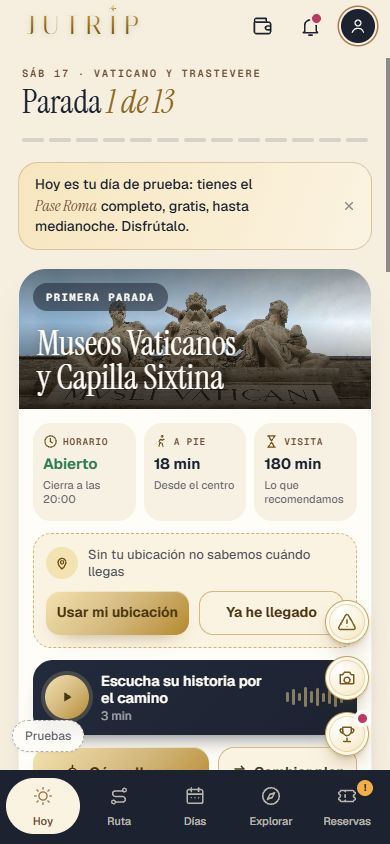
Cuándo sale: Durante todo el día de la prueba (de 00:00 a 23:59, hora del destino): HOY entero y, arriba, esta franja.
Cuántas veces: Se ve todo el día; no es un aviso que se va.
Si suena: No suena. (En HOY, el pase y RESERVAS la app no llama a ningún sonido: `sonar()` solo se pide en los momentos de logros, en la campana de avisos y en el [Visto].)
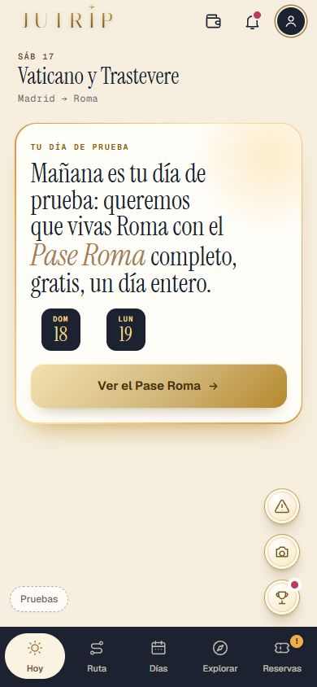
Cuándo sale: El día de llegada, sin pase y sin poder usar HOY (la prueba es otro día). Si la prueba es mañana, encima sale «Mañana es tu día de prueba».
Cuántas veces: Cada vez que se abre HOY ese día (es una tarjeta fija, no un aviso).
Si suena: No suena. (En HOY, el pase y RESERVAS la app no llama a ningún sonido: `sonar()` solo se pide en los momentos de logros, en la campana de avisos y en el [Visto].)
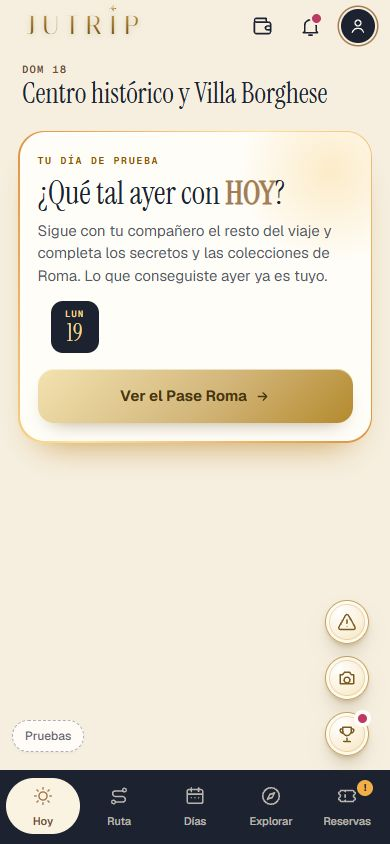
Cuándo sale: Durante el viaje, el día después de la prueba (o cualquier día posterior): [Ver el Pase] y los días que quedan.
Cuántas veces: Cada día de HOY tras la prueba (tarjeta fija).
Si suena: No suena. (En HOY, el pase y RESERVAS la app no llama a ningún sonido: `sonar()` solo se pide en los momentos de logros, en la campana de avisos y en el [Visto].)
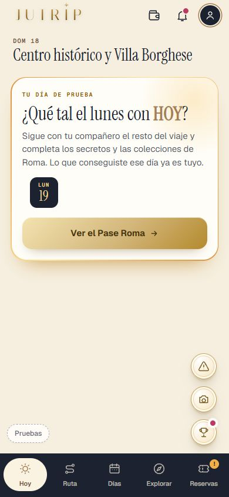
Cuándo sale: Sin pase, con la prueba ya gastada en OTRO viaje.
Cuántas veces: Cada día de HOY de ese viaje (tarjeta fija).
Si suena: No suena. (En HOY, el pase y RESERVAS la app no llama a ningún sonido: `sonar()` solo se pide en los momentos de logros, en la campana de avisos y en el [Visto].)
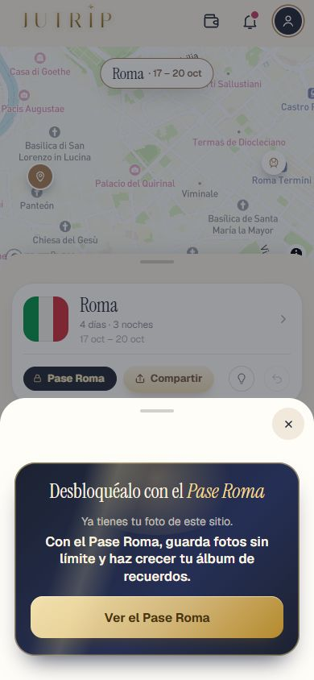
Cuándo sale: Cuando alguien sin pase toca algo del pase (una segunda foto, escuchar otra historia, reservas, etc.).
Cuántas veces: Una vez por toque; se cierra con la X.
Si suena: No suena. (En HOY, el pase y RESERVAS la app no llama a ningún sonido: `sonar()` solo se pide en los momentos de logros, en la campana de avisos y en el [Visto].)
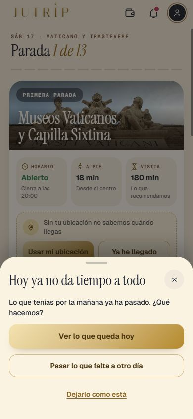
Cuándo sale: Con más de una hora de retraso, o al abrir HOY con la mañana ya pasada y nada hecho.
Cuántas veces: Una vez al día (se apunta en el móvil por viaje y día).
Si suena: No suena. (En HOY, el pase y RESERVAS la app no llama a ningún sonido: `sonar()` solo se pide en los momentos de logros, en la campana de avisos y en el [Visto].)
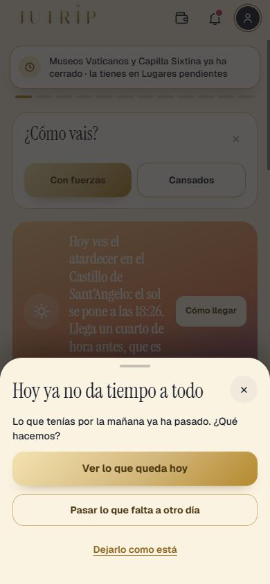
Cuándo sale: Cuando la última entrada de un sitio ya ha pasado (por ejemplo, Museos Vaticanos, última entrada 18:00, y son las 18:20). El enlace [Ver solución] abre la hoja de «Pasar a otro día».
Cuántas veces: Una vez por viaje, día y sitio (`avisosUnaVez`).
Si suena: No suena. (En HOY, el pase y RESERVAS la app no llama a ningún sonido: `sonar()` solo se pide en los momentos de logros, en la campana de avisos y en el [Visto].)
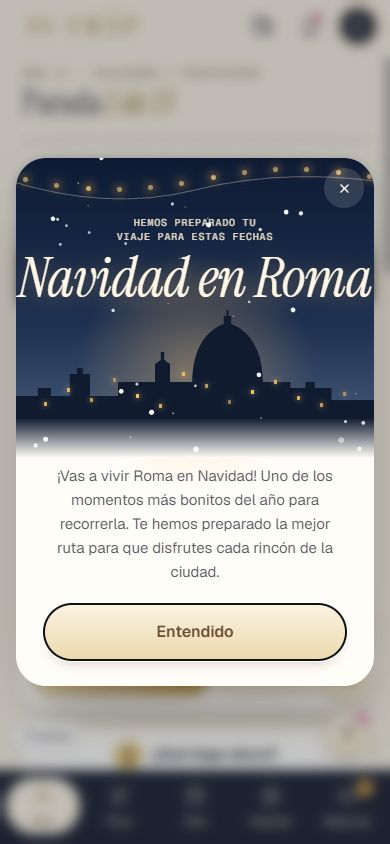
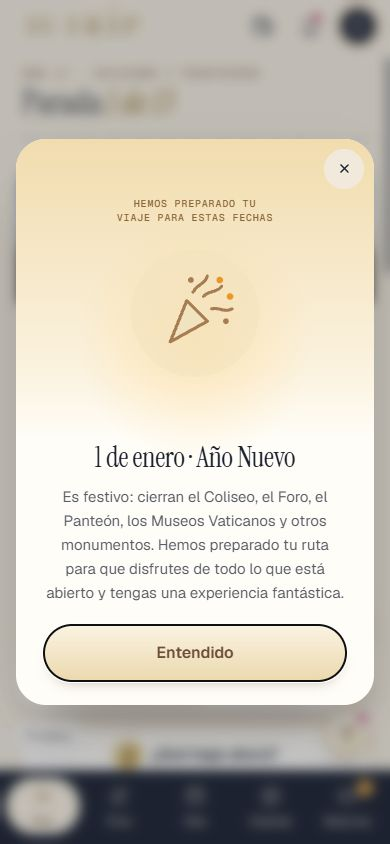
Cuándo sale: Si algún día del viaje cae del 26 de noviembre al 6 de enero (Navidad), en Semana Santa o el 21 de abril; y los avisos de fechas (1 de enero, etc.) que cierran o cambian horarios. Primero la tarjeta de temporada y, al cerrarla, el resto (una sola hoja cada vez).
Cuántas veces: Una vez por viaje (se guarda que ya se enseñó).
Si suena: No suena. (En HOY, el pase y RESERVAS la app no llama a ningún sonido: `sonar()` solo se pide en los momentos de logros, en la campana de avisos y en el [Visto].)
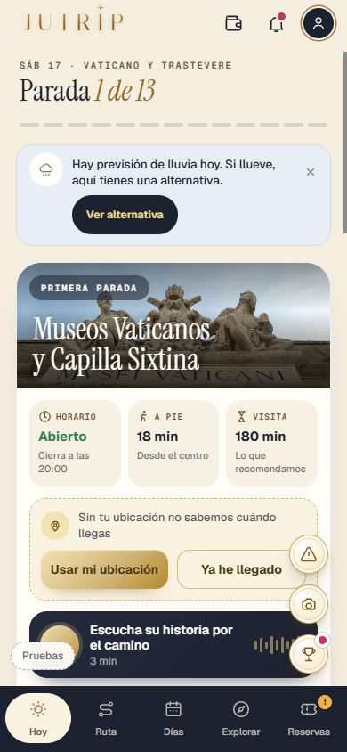
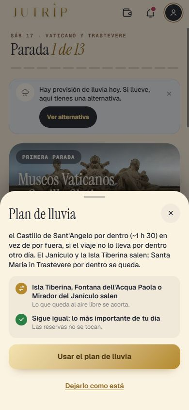
Cuándo sale: Cuando el servidor da previsión de lluvia (más del 50 % de probabilidad o 0,5 mm) en las horas del plan al aire libre. Con [Plan de lluvia] se cambia lo de fuera por sitios cubiertos.
Cuántas veces: Cada vez que se abre HOY con lluvia prevista; el plan se aplica o se deja.
Si suena: No suena. (En HOY, el pase y RESERVAS la app no llama a ningún sonido: `sonar()` solo se pide en los momentos de logros, en la campana de avisos y en el [Visto].)
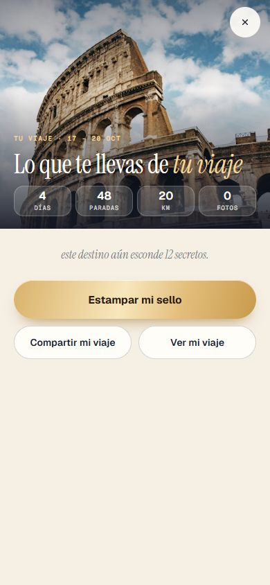
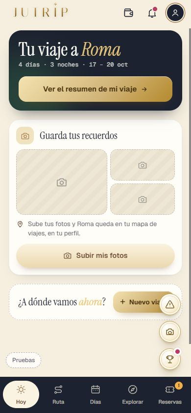
Cuándo sale: Después del viaje (HOY tras el último día), con las tres últimas fotos y los cuadros vacíos de rayas.
Cuántas veces: Cada vez que se abre HOY una vez acabado el viaje (tarjeta fija).
Si suena: No suena. (En HOY, el pase y RESERVAS la app no llama a ningún sonido: `sonar()` solo se pide en los momentos de logros, en la campana de avisos y en el [Visto].)
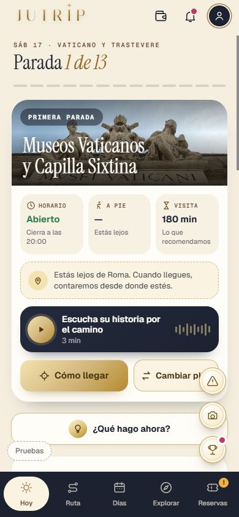
Cuándo sale: Cuando la ubicación está a más de 50 km de todo el viaje. HOY cuenta con el tiempo del plan y no con el GPS.
Cuántas veces: Mientras dure la distancia (recuadro fijo en la tarjeta de la parada).
Si suena: No suena. (En HOY, el pase y RESERVAS la app no llama a ningún sonido: `sonar()` solo se pide en los momentos de logros, en la campana de avisos y en el [Visto].)
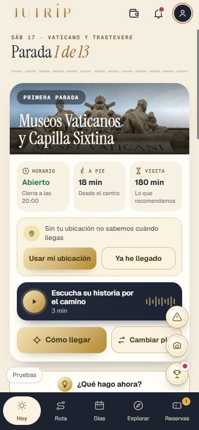
Cuándo sale: Cuando la persona dijo que no a la ubicación y toca [Usar mi ubicación]. Sin pasos, solo [Entendido].
Cuántas veces: Cada vez que toca el botón.
Si suena: No suena. (En HOY, el pase y RESERVAS la app no llama a ningún sonido: `sonar()` solo se pide en los momentos de logros, en la campana de avisos y en el [Visto].)
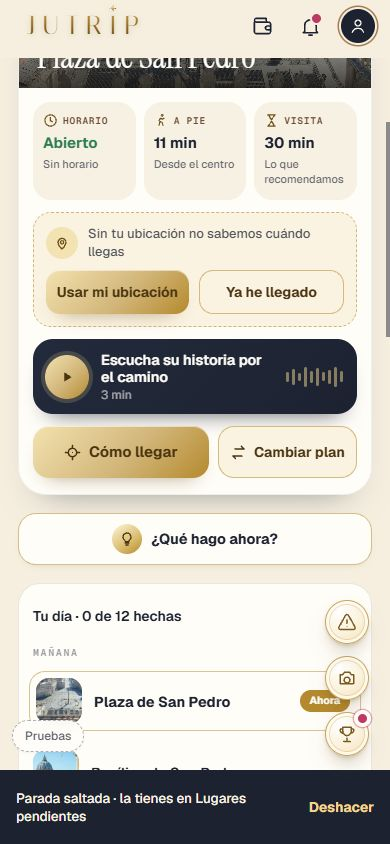
Cuándo sale: Cada vez que algo cambia la ruta: saltar, quitar, pasar a otro día, recuperar. Tapa el menú de abajo.
Cuántas veces: Uno cada vez; no se junta con otro; se va solo.
Si suena: No suena. (En HOY, el pase y RESERVAS la app no llama a ningún sonido: `sonar()` solo se pide en los momentos de logros, en la campana de avisos y en el [Visto].)
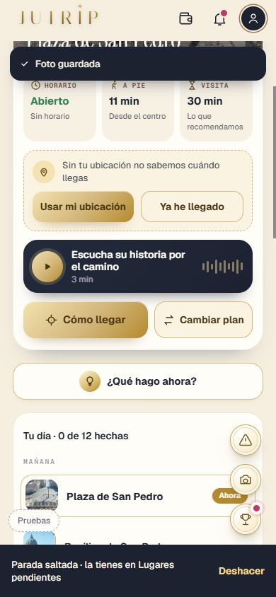
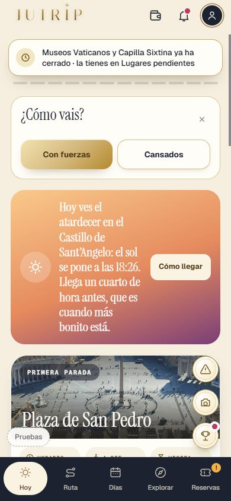
Cuándo sale: Cuando solo informa: un sitio que ya ha cerrado, «Enlace copiado», «Foto guardada». Bajo la cabecera.
Cuántas veces: Se va solo a los 5 s; si hay varios se juntan; cada aviso sale una vez por viaje, día y sitio.
Si suena: No suena. (En HOY, el pase y RESERVAS la app no llama a ningún sonido: `sonar()` solo se pide en los momentos de logros, en la campana de avisos y en el [Visto].)
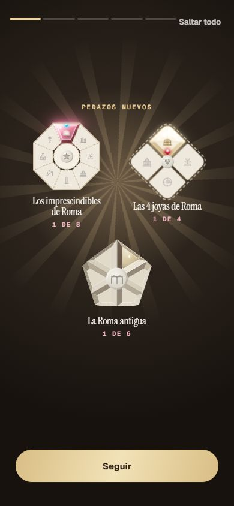
Cuándo sale: Al tocar [Visto] en un sitio que forma parte de una colección: cada colección suma su pedazo (aquí, el Coliseo en «Los imprescindibles», «Las 4 joyas» y «La Roma antigua»).
Cuántas veces: Una vez por pedazo ganado (nunca se repite un sitio ya visto).
Si suena: Sí. Campana alegre (mixkit-happy-bell-alert, de Eric en el estudio), una por pedazo y cada una un poco más aguda; si hay una, dos o tres colecciones suena su versión (pedazo, pedazo_dos, pedazo_tres). Al tocar [Seguir] o saltar, se corta con un fundido corto.
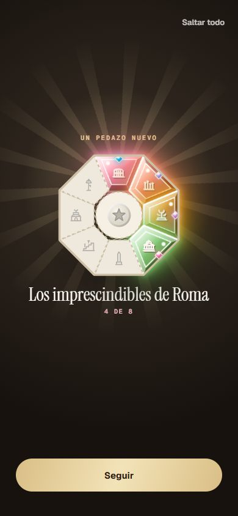
Cuándo sale: Cuando el [Visto] da un pedazo de una sola colección (o dos de la misma): pantalla con la insignia y «1 de 8», «2 de 8»…
Cuántas veces: Una vez por [Visto] que suma.
Si suena: Sí. Campana alegre (mixkit-happy-bell-alert, de Eric en el estudio), una por pedazo y cada una un poco más aguda; si hay una, dos o tres colecciones suena su versión (pedazo, pedazo_dos, pedazo_tres). Al tocar [Seguir] o saltar, se corta con un fundido corto.
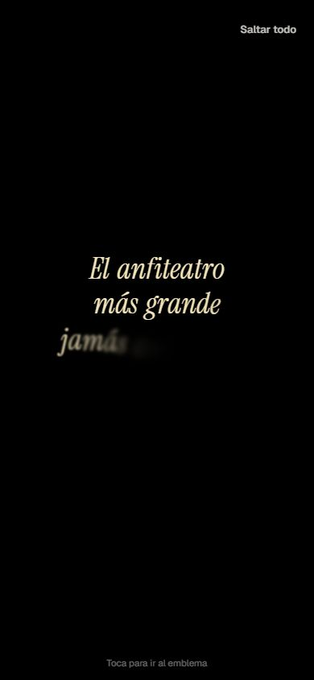
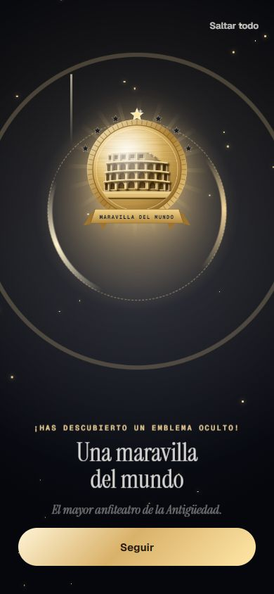
Cuándo sale: Al estar en un sitio con secreto (aquí, el Coliseo con su maravilla): primero la frase de espera con los latidos y el estallido, y después la película del emblema. Los secretos de Roma salen solo cuando se encuentran.
Cuántas veces: Una vez por emblema en la vida de la cuenta (después se repite solo desde Logros, sin suspense).
Si suena: Sí. Subida dramática (dragon-studio-dramatic-riser), latidos de los aros (toque), estallido y la banda de la película. Si la persona salta la escena, se corta con un fundido.
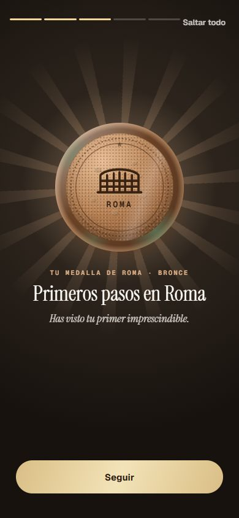
Cuándo sale: Cuando el destino sube de grado: bronce con el primer imprescindible, plata con 4, oro con 6, diamante con 8 de 8.
Cuántas veces: Una vez por grado.
Si suena: Sí. Cada grado tiene su sonido: bronce «shine», plata, oro y diamante una subida (hi-tech-reveal-riser), más el sello de goma. La de oro y la de plata empiezan antes del primer fotograma y la pantalla espera ese rato.
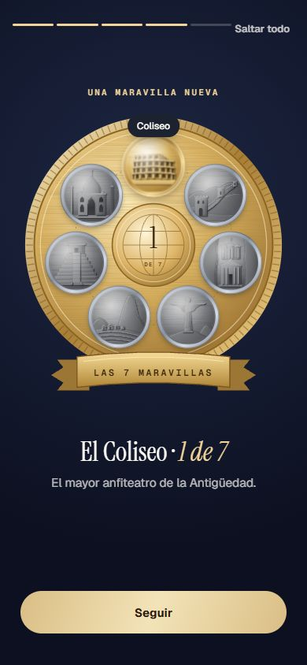
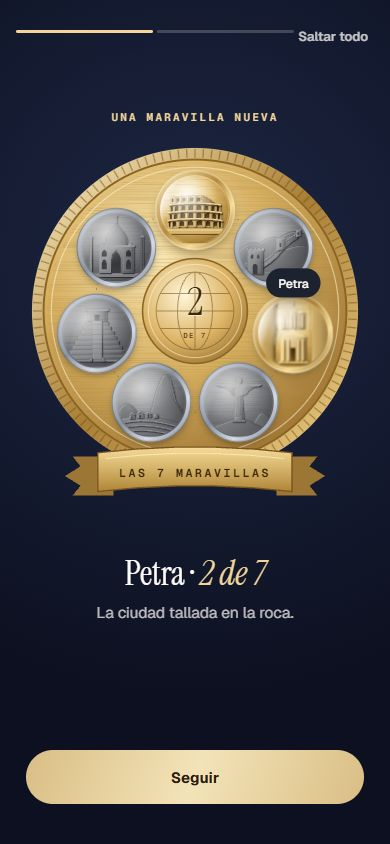
Cuándo sale: Al ganar una de las 7 maravillas del mundo (1.ª a 6.ª, cada una con su pantalla). La 7.ª tiene su propio final.
Cuántas veces: Una vez por maravilla.
Si suena: Sí. Destello sweeping-sparkle (maravilla nueva); la 4.ª, con su versión propia.
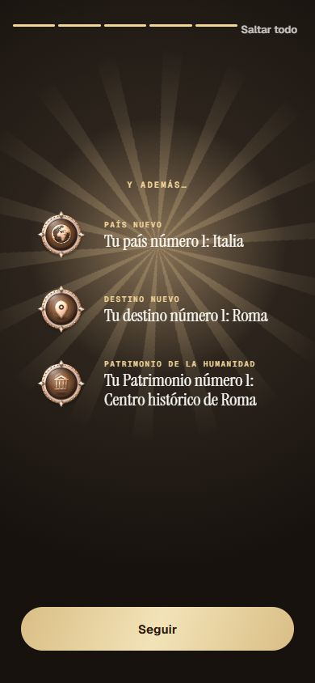
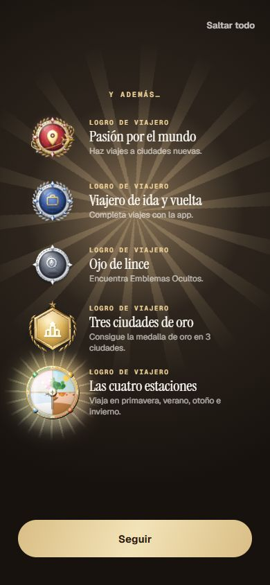
Cuándo sale: Cuando en el mismo [Visto] se ganan varias cosas pequeñas (país nuevo, destino nuevo, Patrimonio, escalones de viajero): se juntan en una sola pantalla en vez de varias.
Cuántas veces: Una vez por [Visto] con 2 o más de estas cosas.
Si suena: Sí. Suena la más importante de las que salen (país, Patrimonio o viajero: destello); no suena una por cada una.
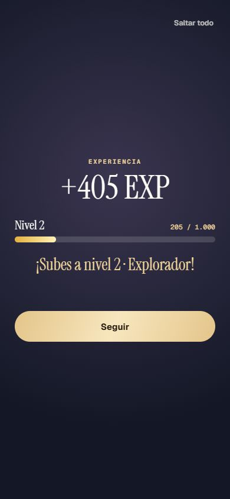
Cuándo sale: Al final de la ronda de lo ganado: «+405 EXP», la barra del nivel y, si cruza, «¡Subes a nivel 2 · Explorador!».
Cuántas veces: Una vez por ronda, tras el resumen del día.
Si suena: No tiene sonido propio en el código (sonar() no se llama en esa pantalla); lo que suena justo antes son los pedazos. Solo el resumen del día y del viaje hacen sonar los números que suben (dia_completo, con el tic).
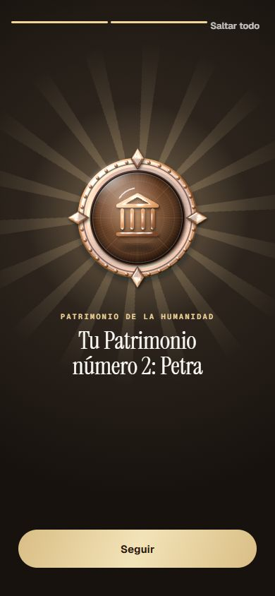
Cuándo sale: Tras la maravilla, el Patrimonio de la Humanidad número N.
Cuántas veces: Una vez por Patrimonio.
Si suena: Sí: destello sweeping-sparkle.
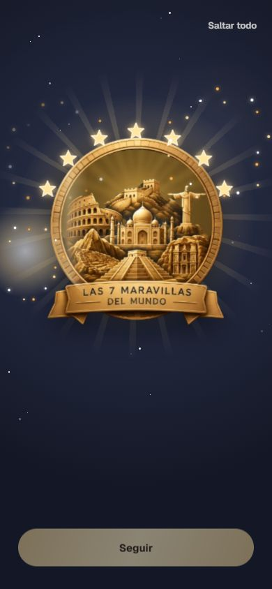
Cuándo sale: Solo con la 7.ª maravilla.
Cuántas veces: Una vez en la vida de la cuenta.
Si suena: Sí: el sonido de «maravilla».
Cuándo sale: Cuando se sube un billete o una tarjeta de embarque cuya fecha no cuadra con la del viaje. Línea naranja DENTRO de la tarjeta, junto al QR, con [Es correcta].
Cuántas veces: Se queda hasta cambiar el documento o pulsar [Es correcta]. No es ventana.
Si suena: No suena. (En HOY, el pase y RESERVAS la app no llama a ningún sonido: `sonar()` solo se pide en los momentos de logros, en la campana de avisos y en el [Visto].)
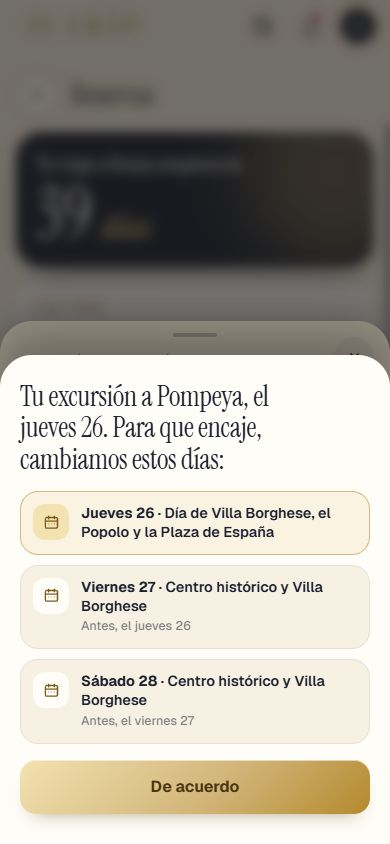
Cuándo sale: Al guardar una excursión o una entrada en otro día: el día de excursión se mueve y los demás se recolocan.
Cuántas veces: Una vez por cambio; con [De acuerdo] y [Deshacer] (abajo, tapando el menú).
Si suena: No suena. (En HOY, el pase y RESERVAS la app no llama a ningún sonido: `sonar()` solo se pide en los momentos de logros, en la campana de avisos y en el [Visto].)
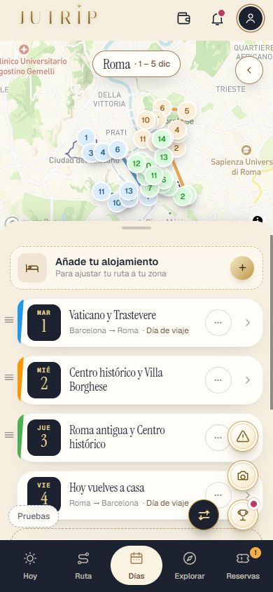
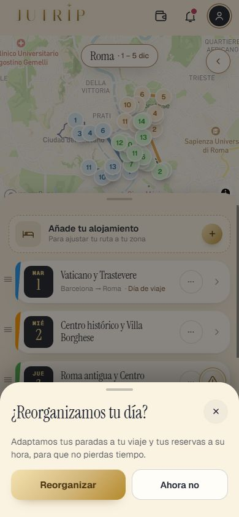
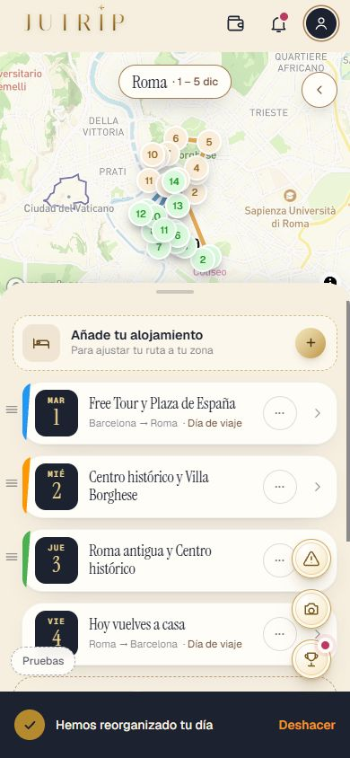
Cuándo sale: Con pase, cuando un cambio (un vuelo, una reserva, un Free Tour) hace que un día se pueda mejorar: sale el botón redondo (columna de la izquierda); al tocarlo, «¿Reorganizamos tu día?»; al aceptar, el día se recoloca con [Deshacer].
Cuántas veces: El botón se queda hasta reorganizar o hasta que el día deje de necesitarlo; la alerta, una vez por toque.
Si suena: No suena. (En HOY, el pase y RESERVAS la app no llama a ningún sonido: `sonar()` solo se pide en los momentos de logros, en la campana de avisos y en el [Visto].)
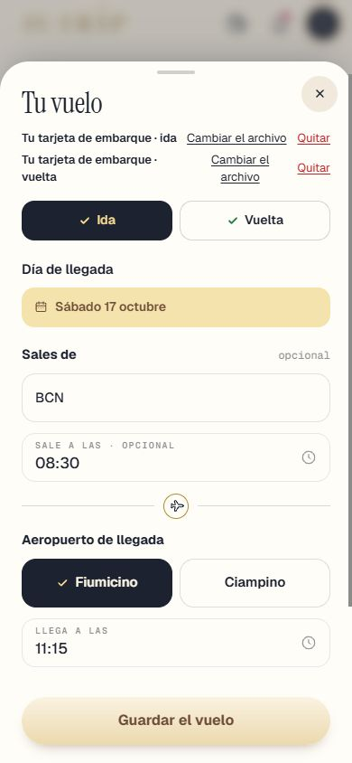